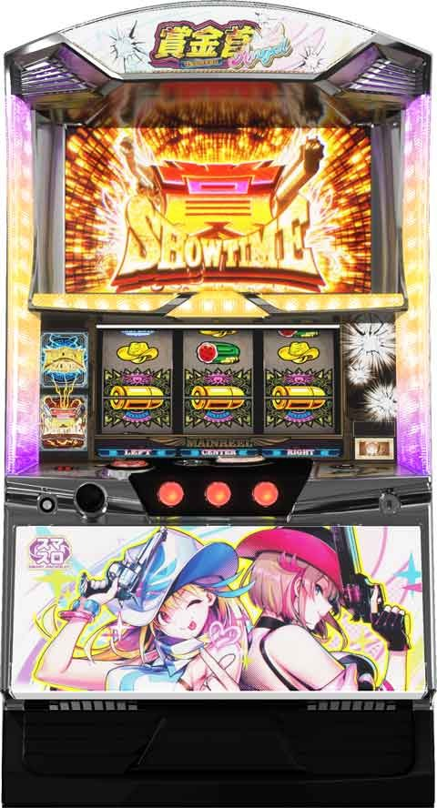

L賞金首 Angel


狙い目
【リセット狙い】
ボーナス間 240Gから
【ボーナス間天井狙い】
580Gから
【AT間天井狙い】
ボーナス間別
0G 1100Gから
200G 1000Gから
【AT駆け抜け後短縮狙い】
ATでバウンティショット未当選で駆け抜けると天井短縮となる。
ボーナス未当選かつATの獲得枚数110枚以下 190Gから
※確実に駆け抜けは見抜けないため、駆け抜けの可能性が高い台を打つ感じ。
【ボーナス中アサルトチャレンジ未当選時】
アサルトチャレンジ未当選時は次回ボーナス間が100Gに短縮される抽選が行われる。
頻度や狙い目は不明。
【手配書狙い】
AT終了時、ゴールドバトル後はリセット。
賞金首5人撃破でバウンティボーナススプラッシュ以上当選のため恐らく強い。
残り1人の場合はかなりボーダー下げれそう。
残り2人でもボーダー下げて良さそう。
恐らく撃破進んでる＝ATスルー続いていると思われる。
【有利区間切れ狙い】
不明
やめ時
1G回してやめ。
Gゲートステージの場合はステージ抜けるまで。
ボーナス間狙いはAT間狙えるとこまでハマれば続行。
ボーナス間狙い時にアサルトチャレンジ非当選の場合は100G以内の天国狙いした方が良さそう？
参考元
基本情報
- メーカー: ネット
- 機械割: 97.7% 〜 110.9%
- 導入開始日: 2024年07月22日（月）
- ゲーム性概要: アメコミ風のデザインと新たなストーリーで、『賞金首Angel』が登場。 シリーズおなじみのデカダンや弾丸の装填個数で獲得報酬が変化する「カチャバンシステム」など、注目しておきたいポイントが数多く存在する。


打ち方
打ち方・小役
通常時の打ち方（小役狙い）
「最初に狙う絵柄」

左リール上段付近にデカダンを狙う。
「デカダン中下段停止時」
成立役…デカダン（1〜3個停止）

デカダン停止はすべて擬似遊技で、中&右リールにもデカダンを目押し。デカダン停止個数が多いほど期待度がアップする。
「デカダン下段停止」
成立役…ハズレorリプレイor3枚ベルor弾丸ベル（8枚）orチャンス目B

一直線に揃うベルが弾丸ベル。
「スイカ停止時」
成立役…スイカor折れベルorチャンス目A

中リールにスイカを狙う（デカダンを目安）。右リールはこぼしがないのでフリー打ちでOKだ。
「レア役の停止形」

「ベルの停止形」

AT中の打ち方
「基本はナビ通りでOK」

ナビ非発生時は通常時と同様の左リールデカダン狙いで消化しよう。
変則押しはNG

通常時は左リール第1停止での消化を推奨する。
解析情報通常時
小役関連
小役確率
| 役 | 確率 |
|---|---|
| 共通3枚ベル | 1/10.4 |
| 共通弾丸ベル | 1/30.0 |
| スイカ | 1/119.2 |
| チャンス目A | 1/364.1 |
| チャンス目B | 1/728.2 |
| 弾丸装填役合算 | 1/21.8 |
※弾丸装填役…共通弾丸ベル、スイカ、チャンス目AorB
デカダン出現確率
内部状態を参照して、毎ゲームデカダンの出現を抽選する。
［通常時］デカダン出現確率
| 内部状態 | 非前兆中 | カチャバンシステム 作動中 |
|---|---|---|
| 通常 | 1/16384.0 | 1/38.9 |
| 高確 | 1/98.7 | 1/8.0 |
| 超高確 | 1/16.0 | 1/8.0 |
| 本前兆中 | ー | 1/8.0 |
内部状態関連
デカダン高確率概要
| 項目 | 内容 |
|---|---|
| 移行契機 | 弾丸発射時、規定ゲーム数消化 |
| 種類 | 通常＜高確＜超高確 |
| 滞在状態で変化する要素 | デカダンの出現確率（最大約1/8） |
| その他 | ステージでデカダン高確率を示唆 |
デカダン高確率の示唆ステージはコチラ
高確・超高確移行率
50G消化ごとに内部状態の昇格を抽選していて、昇格時は保証10Gをセット。超高確中に昇格した場合は10Gが再セットされる。
50G消化ごと・内部状態昇格当選率
| 昇格 | 当選率（設定1） |
|---|---|
| 1段階以上昇格 | 10.9% |
| 通常→超高確へ昇格 | 3.1% |
カチャバンシステム
カチャバンシステム概要

通常時からAT中まで、本機のあらゆる場面でカギとなるのがカチャバンシステムだ。弾丸ベルorレア役成立（弾丸装填）時にカウントが始まり、10G＋αで弾丸を貯めていくゲーム性。弾丸を獲得するほどCZなどの報酬獲得期待度がアップする。
カチャバンシステム性能
| 項目 | 内容 |
|---|---|
| 弾丸装填契機 | 弾丸ベル、レア役、デカダン |
| ゲーム数 | 1発目の弾丸獲得から10Gのカウントスタート |
| 最大装填数 | 6発（6発でCZ以上濃厚） |
| 弾丸発射時の抽選 | 内部状態アップ、CZ、ボーナス、ATなど （AT中はバウンティショット） |
見た目上の最大装填数は6発だが、5発装填時にデカダン揃いを引いた場合の11発まで、内部的には装填される。6発が装填された時点でCZ以上は濃厚だ。
役ごとの弾丸装填数
| 役 | 装填数 |
|---|---|
| 共通弾丸ベル | 1発 |
| スイカ | 2発 |
| チャンス目 | 3発 |
| デカダン1個 | 1発 |
| デカダン2個 | 2発 |
| デカダン3個 | 3発 |
| デカダン揃い | 6発 |
弾丸が装填されるたびに内部状態アップ＜CZ＜ボーナス＜ATの順で報酬昇格を抽選。複数の報酬が重複することはない。
弾丸装填数別・CZ以上当選期待度
| 装填数 | 期待度 |
|---|---|
| 1発 | 約10% |
| 2発 | 約20% |
| 3発 | 約30% |
| 4発 | 約40% |
| 5発 | 約50% |
| 6発 | 100% |
4発装填時にデカダン3個停止など、内部的に7発以上装填した場合は報酬の昇格が抽選される（ロングフリーズ発生の可能性もあり）。
「弾丸とカウンター」

弾丸を獲得したタイミングで、液晶右下のリボルバーに弾丸が装填されてカウントダウンがスタートする。
「10G＋α消化」

10G消化後は、おもに連続演出を経由してCZを告知。CZ非当選時はステージが昇格することもある（装填数が少ない場合などは前兆非経由で終了のパターンあり）。
弾丸6個以上装填時の報酬書き換え当選率
見た目上の最大装填数は6発だが、内部的には11発目まで装填可能。 6発装填された時点でCZ以上濃厚 で、7発目からは上位報酬への書き換えが抽選される。最大の11発目まで装填でロングフリーズ確定だ。
弾丸6発目以降・報酬振り分け
| 弾丸 | CZ | ボーナス | AT | ロングフリーズ |
|---|---|---|---|---|
| 6発目 | 99.2% | 0.4% | 0.2% | 0.2% |
| 7発目 | 98.4% | 0.8% | 0.4% | 0.4% |
| 8発目 | 92.2% | 4.7% | 1.6% | 1.6% |
| 9発目 | ー | 50.0% | 25.0% | 25.0% |
| 10発目 | ー | ー | 50.0% | 50.0% |
| 11発目 | ー | ー | ー | 100% |
バウンティバトル（CZ）
バウンティバトル概要

ボーナス当選のメイン契機となるチャンスゾーンで、 賞金首を撃破できればボーナス確定 。期待度の異なる3種類があって、開始時の中リール狙えでCZ種別（ゲーム性、期待度が変化）を決定する。 どのCZもゲーム数は不定で、味方が倒れる前に敵のHPを削りきればボーナス。ベル揃い、レア役は味方の攻撃、おもにハズレ時に敵の攻撃が発生する。
バウンティバトル性能
| 項目 | 内容 |
|---|---|
| 当選契機 | カチャバンシステム契機の抽選 |
| ゲーム数 | 不定 |
| 成功期待度 | 約40～80% |
| 消化中の抽選 | ベル、レア役で賞金首のHPを0にすれば勝利 |
バウンティバトル確率
| 設定 | 確率 |
|---|---|
| 1 | 1/131.2 |
| 2 | 1/127.8 |
| 4 | 1/119.9 |
| 5 | 1/113.6 |
| 6 | 1/112.9 |
賞金首の勝利期待度序列
| 賞金首 | 序列 | HP |
|---|---|---|
| 鬼子 | 低 | 180 |
| バニー | ↓ | 160 |
| ラブリー | ↓ | 150 |
| マリアージュ | ↓ | 140 |
| サボ | 高 | 130 |
撃破した賞金首はAT終了やゴールドバトル当選（有利区間リセット）まで維持され、全員倒すと報酬としてバウンティボーナススプラッシュ以上を獲得できる。
「CZの種別決定」


中リールにサンド目を狙い、停止形に応じてCZの種類が変化。サンド目が止まればもっとも期待度の高いエンジェルCZへ突入する。
CZ種別ごとの特徴・期待度
| CZ | 特徴 | 期待度 |
|---|---|---|
| アクアCZ | 弾丸ベル成立時に必ずナビが発生 | 約40% |
| ローズCZ | 2択正解で大ダメージに期待 | 約50% |
| エンジェルCZ | 二人の特徴が融合 | 約80% |
攻撃（与ダメージ）契機
| キャラ | 契機 |
|---|---|
| アクア | 弾丸ベル揃い（押し順or共通）、 共通3枚ベル、レア役 |
| ローズ | 2択ナビ正解、共通弾丸ベル、レア役 |
| エンジェル | アクア・ローズ両方の契機で攻撃 |
［アクアCZ］

弾丸ベル成立時に必ず押し順ナビが発生するが、攻撃1回あたりの与えるダメージはやや低め。
［ローズCZ］

2択当て成功でデカダンが停止し、大ダメージのチャンスとなる。
［エンジェルCZ］

アクアとローズ両方の特徴が複合。弾丸ベル揃い時は2人が共闘して攻撃する。
CZ中の弾丸ベル確率
| 役 | 確率 |
|---|---|
| 押し順弾丸ベル | 1/3.3 （ローズは2択正解で揃う） |
| 共通弾丸ベル | 1/30.0 |
実質弾丸ベル揃い確率
| CZ | 確率 |
|---|---|
| アクア | 1/3.0 |
| ローズ | 1/5.5 |
| エンジェル | 1/3.0 |
押し順弾丸ベル確率は1/3.3。ローズのCZ中は2択当てになるため、共通弾丸ベルと2択正解を合算した1/5.5が実質の弾丸ベル揃い確率になる。
［ローズ・エンジェルCZ］ デカダン停止個数別・与ダメージ
| 停止個数 | ダメージ |
|---|---|
| デカダン1個 | 20ダメージ以上 |
| デカダン2個 | 40ダメージ以上 |
| デカダン3個 | 60ダメージ以上 |
| デカダン揃い | 勝利確定 |
［アクアCZ］ダメージ振り分け
| ダメージ | 共通3枚ベル | 弾丸ベル揃い | スイカ | チャンス目 |
|---|---|---|---|---|
| 10 | 93.0% | 47.7% | ー | ー |
| 20 | 5.5% | 28.1% | ー | ー |
| 30 | 0.8% | 14.1% | ー | ー |
| 40 | 0.6% | 7.0% | 56.3% | ー |
| 50 | 0.2% | 3.1% | 14.8% | ー |
| 60 | ー | ー | 7.0% | 78.1% |
| 70 | ー | ー | 7.0% | 7.0% |
| 80 | ー | ー | 7.0% | 7.0% |
| 90 | ー | ー | 6.3% | 6.3% |
| 100 | ー | ー | 0.8% | 0.8% |
| 勝利確定 | ー | ー | 0.8% | 0.8% |
［ローズCZ］ダメージ振り分け
| ダメージ | 弾丸ベル揃い | スイカ | チャンス目 |
|---|---|---|---|
| 10 | ー | ー | ー |
| 20 | 17.2% | ー | ー |
| 30 | 17.2% | ー | ー |
| 40 | 17.2% | 25.0% | ー |
| 50 | 17.2% | 25.0% | ー |
| 60 | 6.3% | 10.2% | 25.0% |
| 70 | 6.3% | 10.2% | 25.0% |
| 80 | 6.3% | 10.2% | 25.0% |
| 90 | 4.7% | 7.8% | 10.2% |
| 100 | 4.7% | 7.8% | 10.2% |
| 勝利確定 | 3.1% | 3.9% | 4.7% |
［エンジェルCZ］アクア分のダメージ振り分け
| ダメージ | 共通3枚ベル | 弾丸ベル揃い | スイカ | チャンス目 |
|---|---|---|---|---|
| 10 | 99.2% | 98.4% | ー | ー |
| 20 | 0.8% | 0.8% | ー | ー |
| 30 | 0.01% | 0.8% | ー | ー |
| 40 | 0.01% | 0.01% | 99.2% | ー |
| 50 | 0.01% | 0.01% | 0.7% | ー |
| 60 | ー | ー | 0.01% | 99.2% |
| 70 | ー | ー | 0.01% | 0.8% |
| 80 | ー | ー | 0.01% | 0.01% |
| 90 | ー | ー | 0.01% | 0.01% |
| 100 | ー | ー | 0.01% | 0.01% |
| 勝利確定 | ー | ー | 0.01% | 0.01% |
［エンジェルCZ］ローズ分のダメージ振り分け
| ダメージ | 弾丸ベル揃い | スイカ | チャンス目 |
|---|---|---|---|
| 10 | ー | ー | ー |
| 20 | 49.2% | ー | ー |
| 30 | 0.8% | ー | ー |
| 40 | 35.2% | 85.2% | ー |
| 50 | 0.75% | 0.8% | ー |
| 60 | 14.1% | 14.1% | 99.2% |
| 70 | 0.01% | 0.01% | 0.8% |
| 80 | 0.01% | 0.01% | 0.01% |
| 90 | 0.01% | 0.01% | 0.01% |
| 100 | 0.01% | 0.01% | 0.01% |
| 勝利確定 | 0.01% | 0.01% | 0.01% |
エンジェルCZでは、アクアとローズの2人分のダメージ抽選がおこなわれる。
終了（転落）＆復活抽選
CZには7Gの継続保証があり、8G目からハズレと1枚役成立時に2段階形式の転落抽選がおこなわれる。1回目の抽選に当選で液晶にデンジャーの帯が出現し、この状態で再度転落抽選に当選するとCZが終了。 終了後は設定に応じた復活抽選をおこなう。
［ハズレ／1枚役］転落抽選当選率
| 対戦相手 | 1回目 （デンジャー帯出現） | 2回目 （CZ終了） |
|---|---|---|
| 鬼子 | 50.0% | 75.0% |
| バニー | 47.7% | 72.7% |
| ラブリー | 45.3% | 70.3% |
| マリアージュ | 43.0% | 68.0% |
| サボ | 40.6% | 64.8% |
転落時・復活当選率
※CZ中に天井に到達かつ、敗北した場合は必ず復活が発生
［デンジャー帯］

前兆
前兆中の抽選

弾丸発射後の前兆中に引いた弾丸ベル・レア役・デカダン停止時は、フェイク前兆中なら本前兆への昇格を、本前兆中は当選している報酬の昇格が抽選される。
演出動画
ロングフリーズ
バウンティボーナススプラッシュ・ゴールデンゾーン・ゴールドバトルのすべてが確定する最強フラグ。発生すれば大量出玉獲得は目前!!
解析情報ボーナス時
バウンティボーナス
バウンティボーナス概要

赤7シングル揃いで突入する、20G＋αのボーナス。ボーナス中に抽選されるチャレンジを成功させればAT突入確定だ。
バウンティボーナス性能
| 項目 | 内容 |
|---|---|
| 当選契機 | 通常時のCZ成功、直撃抽選当選、 AT中の賞金首撃破時の一部 |
| ゲーム数 | 20G＋α（チャレンジ中はゲーム数減算ストップ） |
| 1Gあたりの純増 | 2.8枚 |
| 消化中の抽選 | アサルトチャレンジ（成功でAT確定） AT確定後もアサルトチャレンジ抽選はおこなわれ、 成功時はゴールデンゾーンのゲーム数を上乗せ |
| AT期待度 | 約40% |
バウンティボーナス中のベル確率
| 役 | 確率 |
|---|---|
| 押し順折れベル | 1/3.6 |
| 押し順弾丸ベル | 1/3.3 （ローズのアサルトチャレンジ中は2択正解で揃う） |
| 共通弾丸ベル | 1/30.0 |
実質弾丸ベル揃い確率
| 状態 | 確率 |
|---|---|
| ボーナス中 | 1/3.0 |
| アクアのアサルトチャレンジ中 | 1/3.0 |
| ローズのアサルトチャレンジ中 | 1/5.5 （2択正解含む） |
| エンジェルのアサルトチャレンジ中 | 1/3.0 |
「アサルトチャレンジ」

アサルトチャレンジ性能
| 項目 | 内容 |
|---|---|
| 継続ゲーム数 | 8G |
| アクアCZ | 弾丸ベル成立で期待度が上昇（最終告知） |
| ローズCZ | 弾丸ベルの2択正解でAT抽選（一発告知） |
| エンジェルCZ | 弾丸ベル成立で期待大 |
通常時のCZと同様に、中リール狙えで止まった絵柄によってアクア・ローズ・エンジェルのいずれかに発展。アクアCZは最終ゲームで、ローズ・エンジェルCZは弾丸ベル成立時に発生する狙えカットインで7が揃えば成功となる。
［AT中のアサルトチャレンジ］

AT中（AT確定後）はアサルトチャレンジ成功でゴールデンゾーンのゲーム数を上乗せする。
アサルトチャレンジの抽選値
アクアは弾丸ベルとレア役でエフェクトの色を上げていき、最終ゲームでジャッジ、ローズは弾丸ベル・レア役成立ごとに7揃いを抽選。エンジェルは両方の特性を持っているので、弾丸ベル・レア役成立時はエフェクトの色を上げつつ、7揃い抽選もおこなわれる。 7揃いが確定した後は、ゴールデンゾーンのゲーム数上乗せが抽選される。
アサルトチャレンジ確率
| ボーナス当選時の状態 | 確率 |
|---|---|
| 通常時 | 1/17.2 |
| AT中 | 1/19.3 |
アサルトチャレンジ成功期待度
| 種別 | 期待度 |
|---|---|
| アクア | 約35% |
| ローズ | 約58% |
| エンジェル | 約83% |
［アクア］エフェクトアップ段階振り分け
| 役 | 1段階アップ | 2段階アップ |
|---|---|---|
| 押し順弾丸ベル | 100% | ー |
| 共通弾丸ベル | 100% | ー |
| スイカ | 100% | ー |
| チャンス目 | ー | 100% |
［アクア］最終的なエフェクト色別・7揃い期待度
| 色 | 期待度 |
|---|---|
| 変化ナシ | 青・黄よりも期待度アップ |
| 青 | 低 |
| 黄 | 低 |
| 緑 | 約30% |
| 赤 | 約70% |
| 虹 | 100% |
［ローズ］成立役ごとの7揃い当選率
| 役 | シングル揃い | ダブル揃い |
|---|---|---|
| リプレイ | ー | 0.01% |
| 2択弾丸ベル揃い | 49.8% | 0.2% |
| 共通弾丸ベル | 49.8% | 0.2% |
| 共通3枚ベル | ー | 0.01% |
| スイカ | 60.0% | 0.2% |
| チャンス目 | 70.1% | 0.2% |
※エンジェル中は2択弾丸ベルにも押し順ナビが発生
［ローズ］駆け抜け時の7揃い当選率
| 契機 | 当選率 |
|---|---|
| 8G間で弾丸ベル・レア役を一度も引かない | 50.0% |
※エンジェルはアクアとローズ両方の数値で7揃いを抽選
［アクア］

［ローズ］

［エンジェル］

［通常時のボーナス］アサルトチャレンジ当選率
| 設定 | リプレイ | 共通 弾丸ベル | 押し順 折れベル | 押し順 弾丸ベル |
|---|---|---|---|---|
| 1 | 0.3% | 13.4% | 0.3% | 13.4% |
| 2 | 0.3% | 13.4% | 0.3% | 13.4% |
| 4 | 0.5% | 13.4% | 0.5% | 13.4% |
| 5 | 0.6% | 13.4% | 0.6% | 13.4% |
| 6 | 0.8% | 13.4% | 0.8% | 13.4% |
| 設定 | 1枚役 | 共通 3枚ベル | スイカ | チャンス目 |
| 1 | 0.3% | 0.3% | 60.2% | 100% |
| 2 | 0.3% | 0.3% | 60.2% | 100% |
| 4 | 0.5% | 0.5% | 60.2% | 100% |
| 5 | 0.6% | 0.6% | 60.2% | 100% |
| 6 | 0.8% | 0.8% | 60.2% | 100% |
［AT中のボーナス］アサルトチャレンジ当選率
| 役 | 当選率 |
|---|---|
| リプレイ | 0.1% |
| 共通弾丸ベル | 11.7% |
| 押し順折れベル | 0.1% |
| 押し順弾丸ベル | 11.7% |
| 1枚役 | 0.1% |
| 共通3枚ベル | 0.1% |
| スイカ | 60.2% |
| チャンス目 | 100% |
※抽選値はコスプレちゃれんじと共通
上乗せゴールデンゾーンゲーム数振り分け
ボーナス消化中、最初の7揃い時はシングル揃いかダブル揃いかで上乗せされるゲーム数の振り分けが変化。7揃い後は弾丸ベル揃いとレア役で追加上乗せが抽選される。 ※7揃いが最終ゲームで告知されるアクアのチャレンジ中は詳細な判別は不可
［7揃い］上乗せゴールデンゾーンゲーム数振り分け
| 上乗せ | シングル揃い | ダブル揃い |
|---|---|---|
| ＋10G | 79.7% | ー |
| ＋20G | 19.5% | ー |
| ＋30G | 0.8% | 50.0% |
| ＋50G | 0.01% | 40.6% |
| ＋100G | 0.01% | 9.4% |
［7揃い後の小役］上乗せゴールデンゾーンゲーム数振り分け
| 上乗せ | 共通 弾丸ベル | 押し順 弾丸ベル | スイカ | チャンス目 |
|---|---|---|---|---|
| ＋10G | 0.8% | 0.8% | 47.7% | 95.3% |
| ＋20G | 0.01% | 0.01% | 1.6% | 3.1% |
| ＋30G | 0.01% | 0.01% | 0.8% | 1.6% |
※抽選値はコスプレちゃれんじと共通
バウンティボーナススプラッシュ
バウンティボーナススプラッシュ概要

赤7ダブル揃いで突入するボーナス。抽選システムはバウンティボーナスと共通だが、ゲーム数が40G＋αと長いため期待度も高い。
バウンティボーナススプラッシュ性能
| 項目 | 内容 |
|---|---|
| 当選契機 | 通常時のCZ成功、直撃抽選当選、 AT中の賞金首撃破時の一部、賞金首5人撃破時 |
| ゲーム数 | 40G＋α（チャレンジ中はゲーム数減算ストップ） |
| 1Gあたりの純増 | 2.8枚 |
| 消化中の抽選 | コスプレチャレンジ（成功でAT確定） AT確定後もコスプレチャレンジ抽選はおこなわれ、 成功時はゴールデンゾーンのゲーム数を上乗せ |
| AT期待度 | 約67% |
バウンティボーナススプラッシュ中のベル確率
| 役 | 確率 |
|---|---|
| 押し順折れベル | 1/3.6 |
| 押し順弾丸ベル | 1/3.3 （ローズのコスプレちゃれんじ中は2択正解で揃う） |
| 共通弾丸ベル | 1/30.0 |
実質弾丸ベル揃い確率
| 状態 | 確率 |
|---|---|
| ボーナス中 | 1/3.0 |
| アクアのコスプレちゃれんじ中 | 1/3.0 |
| ローズのコスプレちゃれんじ中 | 1/5.5 （2択正解含む） |
| エンジェルのコスプレちゃれんじ中 | 1/3.0 |
「コスプレちゃれんじ」


バウンティボーナスと同様に中リール狙えでコスプレするキャラを決定。コスプレが成功すればAT確定（AT中はゴールデンゾーンのゲーム数上乗せ）となる。 味方キャラがデフォルトだが、敵キャラパターンなら大チャンス！
［AT中はゴールデンゾーンのゲーム数上乗せ］

コスプレちゃれんじの抽選値
バウンティボーナス中のアサルトチャレンジと基本的なゲーム性や抽選値は共通。敵キャラver.のチャレンジ（WANTED）が発生するのが違いで、WANTED成功時はダブル7揃いが確定する。
コスプレちゃれんじ成功期待度
| 種別 | 期待度 |
|---|---|
| アクア | 約35% |
| ローズ | 約58% |
| エンジェル | 約83% |
| WANTED（敵キャラver.） | 約65% |
［ローズ］成立役ごとの7揃い当選率
※エンジェル中は2択弾丸ベルにも押し順ナビが発生
［ローズ］駆け抜け時の7揃い当選率
※エンジェルはアクアとローズ両方の数値で7揃いを抽選
［WANTED］成立役ごとのダブル7揃い当選率
| 役 | 当選率 |
|---|---|
| リプレイ | 0.01% |
| 押し順弾丸ベル | 33.6% |
| 共通弾丸ベル | 33.6% |
| 共通3枚ベル | 0.01% |
| スイカ | 50.0% |
| チャンス目 | 100% |
［WANTED］駆け抜け時のダブル7揃い当選率
| 契機 | 当選率 |
|---|---|
| 8G間で弾丸ベル・レア役を一度も引かない | 33.6% |
［アクア］

［ローズ］

［エンジェル］

［WANTED］

中リール狙え時にWANTED（敵キャラバージョンのコスプレちゃれんじ）への昇格を抽選。成功時は必ずダブル7揃いになる。
［AT中のボーナス］コスプレちゃれんじ当選率
※抽選値はアサルトチャレンジと共通
［7揃い後の小役］上乗せゴールデンゾーンゲーム数振り分け
※抽選値はアサルトチャレンジと共通
賞タイム（AT）
賞タイム概要

1セット30GのST型AT。おもに カチャバンシステムの弾丸個数でバウンティショット（賞金首とのバトル）を抽選 していて、バトルに勝利すればSTがリセット。勝利時の一部でボーナスを獲得する。5人の賞金首をすべて撃破するとバウンティボーナススプラッシュ or ゴールドバトル当選となる。
賞タイム性能
| 項目 | 内容 |
|---|---|
| ゲーム数 | 30GのST型 |
| 1Gあたりの純増 | 2.8枚 |
| 消化中の抽選 | カチャバンシステムによるバウンティショット抽選 賞金首撃破でSTがリセット |
| 消化中の抽選 | 賞金首撃破時の一部でボーナスに当選 |
| ループ期待度 | 約75% |
| 弾丸ベル確率 | 約1/3 |
| デカダン確率 | 約1/30 or 1/8（滞在ステージで変化） |
初当り時とボーナス終了後は夕方ステージ（デカダン確率約1/8）からスタートする。
「AT中のカチャバンシステム」

基本は通常時と同様に、弾丸ベルとレア役で弾丸を装填。弾丸ベルにナビが発生するようになるため、通常時に比べて弾丸の装填スピードがアップ。ただし、通常時の10Gではなく、3G間で貯めた弾丸でバウンティショットが抽選される。
カウントの最終ゲームで弾丸が装填された場合、ゲーム数が＋1Gされる。
弾丸装填数別・バウンティショット以上当選期待度
| 装填数 | 期待度 |
|---|---|
| 1発 | 約15% |
| 2発 | 約30% |
| 3発 | 約45% |
| 4発 | 約60% |
| 5発 | 約75% |
| 6発 | 100%（バウンティショット以上） |
弾丸6発目以降装填時・報酬振り分け
| 弾丸 | バウンティショット | 勝利確定の バウンティショット | ボーナス |
|---|---|---|---|
| 6発目 | 93.8% | 3.1% | 3.1% |
| 7発目 | 87.5% | 6.3% | 6.3% |
| 8発目 | 75.0% | 12.5% | 12.5% |
| 9発目 | 50.0% | 25.0% | 25.0% |
| 10発目 | ー | 50.0% | 50.0% |
| 11発目 | ー | ー | 100% |
通常時と同様、6発目が装填された時点でバウンティショットは確定。内部的には最大11発目まで装填可能で、多く装填するほど上位報酬の可能性が高くなる。
バウンティショット（CZ）
バウンティショット概要


2Gのバトルで、賞金首撃破成功でSTゲーム数をリセット。 弾丸ベルが揃えば勝利期待度50%以上だ。実戦上、弾丸ベルもレア役も引かずに勝利するケースも多かったので、突入時に勝利抽選をしている可能性もある。
対戦相手ごとの勝利期待度
| 賞金首 | 期待度 |
|---|---|
| 鬼子 | 約47% |
| バニー | 約57% |
| ラブリー | 約66% |
| マリアージュ | 約74% |
| サボ | 約82% |
「報酬ジャッジ」

撃破後は1Gのルーレットで報酬を告知。弾丸ベル以上の小役成立で報酬のランクアップが抽選される。5人全員撃破後はバウンティボーナススプラッシュ以上確定だ。
勝利時の報酬一覧
| No. | 報酬 |
|---|---|
| 1 | ST再セットのみ |
| 2 | 夕方ステージへ |
| 3 | バウンティボーナス |
| 4 | バウンティボーナススプラッシュ |
| 5 | 5人撃破後はバウンティボーナススプラッシュor バウンティボーナススプラッシュ＋ゴールドバトル獲得 |
※No.2～5の報酬獲得時もSTは再セット
賞金首5人撃破時の報酬振り分け
| 5人撃破回数 | バウンティボーナス スプラッシュ | バウンティボーナス スプラッシュ＋GB |
|---|---|---|
| 1回目 | 94.9% | 5.1% |
| 2回目 | 49.7% | 50.3% |
| 3回目 | ー | 100% |
※GB…ゴールドバトル
※AT中に賞金首全員を撃破した場合に限る ※賞金首手配書の撃破状況はAT終了またはゴールドバトル突入時にリセット
バウンティショットの勝利当選率
| 対戦相手 | その他 | 押し順 折れベル | 弾丸ベル揃い | レア役 |
|---|---|---|---|---|
| 鬼子 | 0.4% | 0.4% | 50.0% | 100% |
| バニー | 0.4% | 0.4% | 60.2% | 100% |
| ラブリー | 0.4% | 0.4% | 70.3% | 100% |
| マリアージュ | 0.4% | 0.4% | 80.5% | 100% |
| サボ | 0.4% | 0.4% | 90.6% | 100% |
バウンティショットの報酬振り分け
| 報酬 | ST残り 10G以下 | ST残り 20～11G | ST残り 30～21G | ゴールデン ゾーン中 |
|---|---|---|---|---|
| ST再セットのみ | 63.7% | 57.4% | ー | ー |
| 夕方ステージへ | 18.3% | 24.2% | 81.0% | ー |
| ボーナス | 17.7% | 17.9% | 18.2% | 96.6% |
| スプラッシュ | 0.4% | 0.5% | 0.8% | 3.4% |
※ボーナス…バウンティボーナス、スプラッシュ…バウンティボーナススプラッシュ
ゴールデンゾーン（高確AT）
ゴールデンゾーン概要

AT中に引いたボーナスでチャレンジを成功させる（ゴールデンゾーンのゲーム数を獲得する）と突入する、ゲーム数管理型のAT。 デカダン確率がつねに約1/8 なのでバトルに発展しやすく、賞金首を撃破すればボーナス確定。ボーナスで再びゴールデンゾーンのゲーム数を上乗せというループで出玉を増やすゲーム性だ。
ゴールデンゾーン性能
| 項目 | 内容 |
|---|---|
| 突入契機 | AT中のボーナスでチャレンジを成功 |
| ゲーム数 | 獲得したゲーム数を消化するまで |
| 1Gあたりの純増 | 2.8枚 |
| 消化中の抽選 | カチャバンシステムによるバウンティショット抽選 賞金首撃破でボーナス確定 |
| 消化中の抽選 | ボーナス中のチャレンジ成功で ゴールデンゾーンのゲーム数上乗せ |
| 弾丸ベル確率 | 約1/3 |
| デカダン確率 | 約1/8 |
| ゲーム数消化後 | 賞タイムorゴールドバトルへ |
ゴールドバトル
ゴールドバトル概要


賞金首5人撃破時の一部などで突入する、1セット最大3Gのゴールデンゾーンゲーム数上乗せ特化ゾーン。 3G以内に弾丸ベル・レア役を引けばセット継続確定 で、擬似遊技で停止するデカダンの停止個数に応じてゲーム数を上乗せする。 最大で10セットまで継続の可能性があり、各セットの継続期待度は約80%だ。
ゴールドバトル性能
| 項目 | 内容 |
|---|---|
| 突入契機 | 賞金首5人撃破時の一部、ロングフリーズ エンディング（ファイナルエピソード）後 |
| ゲーム数 | 1セット3G |
| ループ率 | 約80%（最大10セット目まで） |
| 消化中の抽選 | セット継続ごとにゴールデンゾーンのゲーム数を上乗せ |
| 期待枚数 | 約2300枚以上（突入までの枚数含む） |
| 平均継続セット | 4.9回 |
| 平均上乗せ | 79.1G |
デカダン停止個数別・上乗せゲーム数
| 停止個数 | ゲーム数 |
|---|---|
| デカダン1個 | ＋10G |
| デカダン2個 | ＋20G |
| デカダン3個 | ＋30G |
| デカダン揃い | ＋50G以上 |
10セット目のみ、＋50〜300G（50G単位）で上乗せされる。
成立役別・上乗せゲーム数振り分け
| 上乗せ | 弾丸ベル | スイカ | チャンス目 |
|---|---|---|---|
| ＋10G | 76.8% | ー | ー |
| ＋20G | 17.0% | 77.2% | ー |
| ＋30G | 4.1% | 16.9% | 77.2% |
| ＋50G | 2.0% | 5.9% | 22.8% |
バトル中に上乗せされたゲーム数に応じて、追加での上乗せ抽選もおこなわれる。10セット目は追加上乗せが抽選されない代わりに、デカダン停止時の上乗せが50G単位に増加する（＋50G〜300G）。
［９セット目まで］ セット継続時・追加上乗せゲーム数振り分け
| 追加 上乗せ | セット継続時に上乗せしたゲーム数 | |||
|---|---|---|---|---|
| 追加 上乗せ | ＋10G | ＋20G | ＋30G | ＋50G |
| 非当選 | 89.7% | 79.7% | 69.5% | 50.0% |
| ＋10G | 9.4% | 16.4% | 21.9% | 25.0% |
| ＋20G | 0.8% | 3.1% | 6.3% | 12.5% |
| ＋30G | 0.1% | 0.6% | 1.6% | 6.3% |
| ＋50G | 0.01% | 0.2% | 0.8% | 6.3% |
追加上乗せ当選時は、再び擬似遊技が発生して上乗せを告知する。
［10セット目］上乗せゲーム数振り分け
| 上乗せ | 弾丸ベル | スイカ | チャンス目 |
|---|---|---|---|
| ＋50G | 76.7% | ー | ー |
| ＋100G | 17.0% | 77.0% | ー |
| ＋150G | 4.3% | 16.9% | 77.0% |
| ＋200G | 2.1% | 6.0% | 22.8% |
| ＋250G | 0.01% | 0.03% | 0.1% |
| ＋300G | 0.004% | 0.01% | 0.04% |
ツラヌキ・有利区間
ツラヌキ条件と恩恵
| 項目 | 内容 |
|---|---|
| 条件 | エンディング到達時 |
| 恩恵 | ゴールドバトル突入 |
エンディング
エンディング概要


一定の枚数を獲得するとエンディング（ファイナルエピソード）が発生。エピソード終了時に有利区間がリセットされ、ゴールドバトルへ突入。 エンディング中のレア役成立時は、ボイスで設定が示唆される。
演出情報
通常時
ステージの序列（デカダン確率示唆）
| ステージ | 序列 |
|---|---|
| フォックススタンド | 低 |
| ウエストエッジタウン | ↓ |
| ファンキーキャッツバー | ↓ |
| Gゲート | 高 |
滞在ステージに応じてデカダン確率が変化する（最大約1/8）。
［フォックススタンド］

［ウエストエッジタウン］

［ファンキーキャッツバー］

［Gゲート］

連続演出期待度
| 演出 | 期待度 |
|---|---|
| ビッグリボルバーを開発しろ！ | 約15% |
| 物資を奪還せよ！ | 約35% |
| ZAKOを撃退せよ！ | 約55% |
| レアメタルを奪い取れ！ | 約80% |
［ZAKOを撃退せよ！］

連続演出は復活込みで最大4G継続する。
シトリンランプ・示唆内容
| 状態 | 示唆 |
|---|---|
| アサルトチャレンジ、コスプレちゃれんじ中 | 7揃い成功 （初当り時） |
| AT中 | ボーナス |
| バウンティショット中 | バウンティボーナス以上 |
| 報酬ジャッジ中 | バウンティボーナス以上 |
| ゴールドバトル中 | ＋20G以上 |
弾痕ランプ・示唆内容
| 状態 | 色 | 示唆 |
|---|---|---|
| 通常時 | 白点滅 | 弾丸2発以上装填 |
| 弾丸発射後の 前兆中 | 白 | デフォルト |
| 弾丸発射後の 前兆中 | 青 | 連続演出発展（矛盾でCZ以上濃厚） |
| 弾丸発射後の 前兆中 | 赤 | 連続演出発展（矛盾でCZ以上濃厚） |
| 弾丸発射後の 前兆中 | 虹 | ボーナス以上 |
| CZ中 | 白点滅 | 勝利 |
| AT中 | 白点滅 | CZ以上 |
| バウンティ ショット中 （第3停止時） | 白点滅（※） | デフォルト |
| バウンティ ショット中 （第3停止時） | 青点滅 | 期待度アップ |
| バウンティ ショット中 （第3停止時） | 点滅赤 | 勝利 |
| バウンティ ショット中 （第3停止時） | 虹点滅 | バウンティボーナススプラッシュ以上 |
※レバーON時の白点滅は勝利濃厚
賞タイムランプ点滅・示唆内容
| 状態 | 示唆 |
|---|---|
| 通常時 | AT当選 |
| アサルトチャレンジ、コスプレちゃれんじ中 | 7揃い成功 （初当り時） |
［シトリンランプ］

［弾痕ランプ］

弾丸発射後の前兆中は白＜青＜赤の順にCZ期待度がアップする。
［賞タイムランプ］

AT中は基本的に賞タイムランプが点灯しているが、先バレ的な要素として点滅することもある。
アメコミカットイン
アメコミカットイン発生時の示唆
| 状態 | キャラ | 示唆 |
|---|---|---|
| 通常時 | アクア | 弾丸2発以上獲得 （矛盾でCZ以上） |
| 通常時 | ローズ | 弾丸3発獲得 （矛盾でCZ以上） |
| 通常時 | シトリン | ボーナス以上に当選 |
| 弾丸発射後の 前兆中 | アクア | レア役示唆（矛盾でCZ以上） |
| 弾丸発射後の 前兆中 | ローズ | チャンス目示唆（矛盾でCZ以上） |
| 弾丸発射後の 前兆中 | シトリン | ボーナス以上に当選 |
| CZ中 | ローズ | 2択正解で勝利 |
| AT中 | アクア | レア役orデカダン示唆 （矛盾でCZ以上） |
| AT中 | ローズ | チャンス目orデカダン示唆 （矛盾でCZ以上） |
| AT中 | シトリン | ボーナス以上に当選 |
| アサルトチャレンジ | ローズ | 2択正解で7揃い成功 |
［アクア］

［ローズ］

［シトリン］

バウンティボーナス（スプラッシュ含む）
ボーナス中・7揃い成功後の演出別示唆
| タイミング | 演出 | 示唆 |
|---|---|---|
| レバーON時 | 下パネル点滅 | ＋30G以上 |
| レバーON時 | 下パネル消灯 | ＋50G以上 |
| 第3停止時 | 大SPボタン | ＋50G以上 |
| 第3停止時 | 下パネル消灯 | ＋50G以上 |
※バウンティボーナス、バウンティボーナススプラッシュ共通
コスプレちゃれんじwithエンジェル・特殊パターン
| パターン | 示唆 |
|---|---|
| 十字架コスプレ | ＋20G以上 |
| おしりペンペン | ＋30G以上 |
賞タイム（AT）
AT中ステージごとのデカダン確率
| ステージ | 確率 |
|---|---|
| 昼ステージ | 約1/30 |
| 夕方ステージ | 約1/8 |
AT中もステージに応じてデカダンの停止確率が変化。夕方ステージは約1/8でデカダンが停止する。
［昼ステージ］

［夕方ステージ］

連続演出期待度
| 演出 | 期待度 |
|---|---|
| ドリフトを成功させろ！ | 約30% |
| ZAKOを迎撃しろ！ | 約60% |
| ZAKO軍団を突破せよ！ | 約90% |
［ZAKOを迎撃しろ！］

賞タイム中の演出は1G固定。成功でバウンティショットに移行する。
ゴールドバトル
ゴールドバトル中の演出法則
| 演出 | 法則 |
|---|---|
| シトリンランプ | ＋20G以上 |
| ！ナビ | ＋20G以上 |
| !!!ナビでスイカ以外 | ＋30G以上 |
| !!!ナビでスイカ | ＋50G以上 |
| 紫ナビ | ＋50G以上 |
| ローズのデカダンを狙え | 当該ゲームでトータル＋20G以上 表示が10Gなら追撃あり |
| 筐体振動 | ＋50G |
その他
搭載楽曲
| 楽曲 | vocal | 流れるタイミング |
|---|---|---|
| Foxy! | アクア （CV:鈴代紗弓） ローズ （CV:長谷川育美） | バウンティボーナス スプラッシュ |
| Blooms&Bullets | アクア （CV:鈴代紗弓） ローズ （CV:長谷川育美） | 賞タイム突入時 アサルトチャレンジ 成功時の一部 |